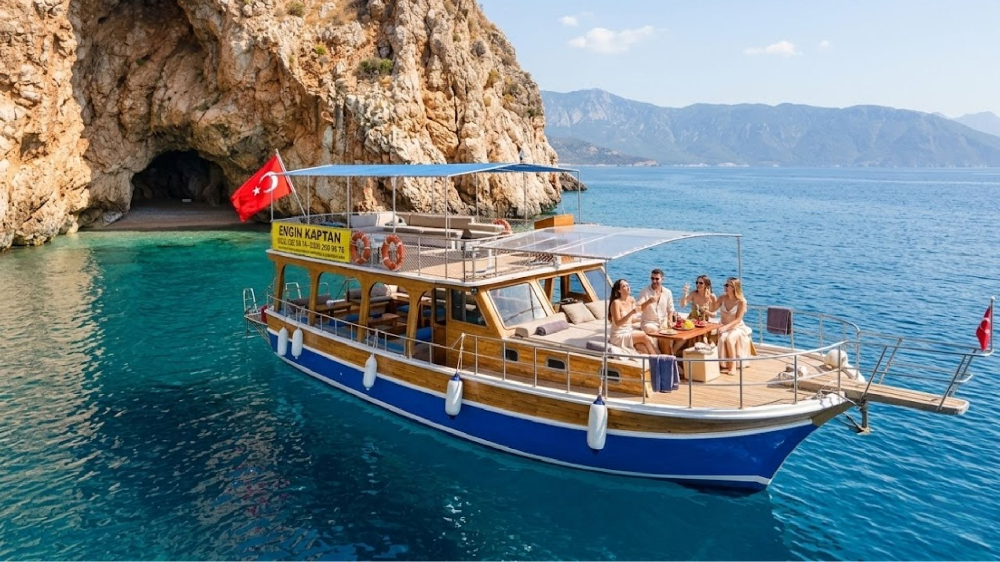

Tekne size özel
Tanımadığınız kişilerle birlikte seyahat etmek yerine yalnızca kendi grubunuzla, istediğiniz gibi bir gün geçirin.
Standart turlarda yabancılarla paylaşmak zorunda değilsiniz. Özel turda tekne yalnızca sizin grubunuza tahsis edilir; nereye gideceğinizi, nerede ne kadar kalacağınızı ve günün nasıl geçeceğini siz belirlersiniz.

Tekne yalnızca sizin grubunuza ayrılır. Yabancılarla paylaşım yok, kendi temponuzda bir gün.
Standart günlük turlarda tekne, farklı gruplardan misafirlerle birlikte hareket eder. Özel turda ise tekne yalnızca sizin için kalkıyor.
Tanımadığınız kişilerle birlikte seyahat etmek yerine yalnızca kendi grubunuzla, istediğiniz gibi bir gün geçirin.
Suluada, Korsan Koyu, Ceneviz, Akseki, Sazak — hangi koylara, hangi sırayla gideceğinize siz karar verin. İstediğiniz yerde daha uzun kalın.
Standart 10:00–16:00 programına bağlı değilsiniz. Sabah erkenden kalkmak ya da öğleden sonra başlamak gibi seçenekleri konuşabiliriz.
Aşağıdaki durakların tamamını kapsayan bir tur yapabilir, yalnızca birkaçını seçebilir ya da bir koyda saatlerce kalabilirsiniz. Program tamamen grubunuzun isteğine göre şekillenir.
* Hava ve deniz koşullarına bağlı olarak bazı duraklar değişebilir. Kaptan en güncel bilgiyi rezervasyon aşamasında paylaşır.
Tarih, kişi sayısı ve gitmek istediğiniz koyları kısaca belirtin. En kısa sürede fiyat ve müsaitlik bilgisi iletilir.
Grubunuzun isteklerine göre rota ve gün akışını birlikte şekillendirin. Özel istek varsa bu aşamada belirtin.
Belirlenen saatte Adrasan iskelesinde buluşun. Gerisi bizde — siz sadece denizin tadını çıkarın.
Seyir sırasında telefon çekmeyebilir. WhatsApp'tan mesaj bırakırsanız en kısa sürede dönüş yapılır.